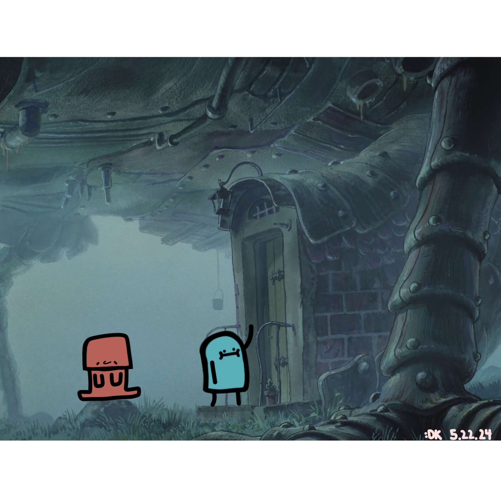
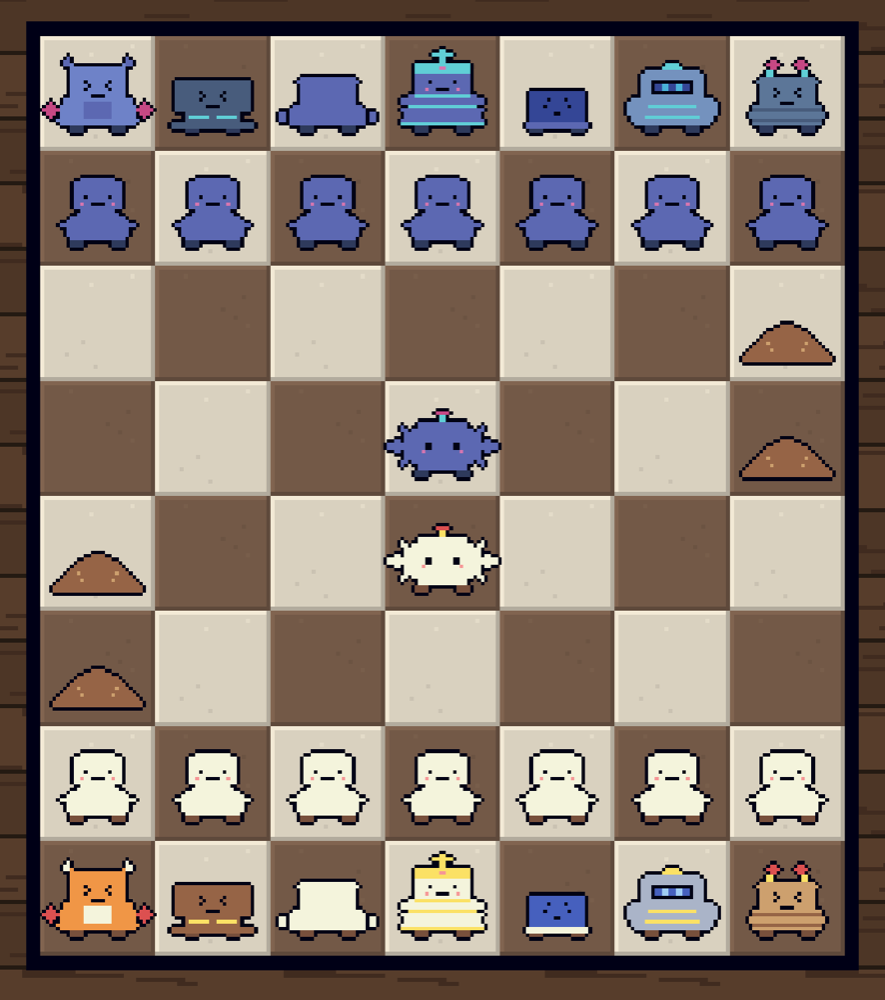
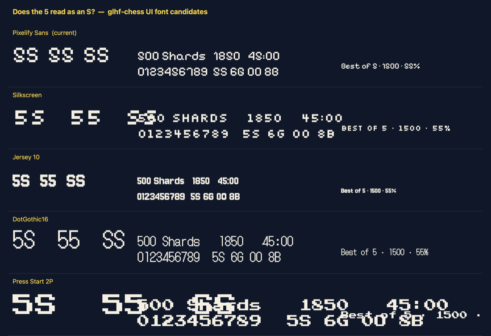
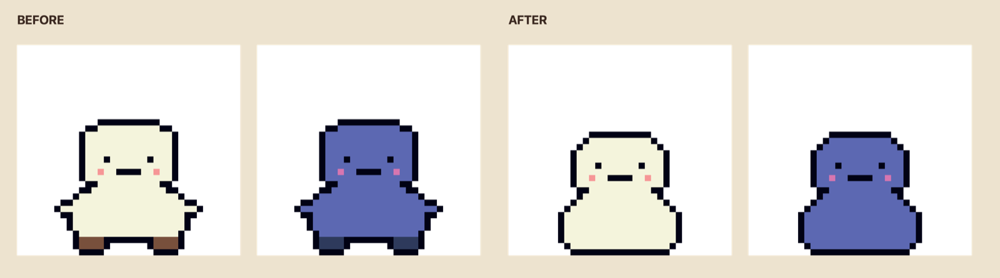

October opened still on the roster push from September, at a pace I
would not recommend — twenty-odd units, same rule as before, each one
claiming a verb nothing else does. The Twins are two
pieces in one slot moving as one, the Courier
announces its move two turns before making it, and the
Bodyguard is a Queen, but only while your King is in
danger.
Writing that many units that fast surfaced a problem with the board
rather than with any one of them. Enough units now claim squares
around themselves that a single highlight colour had stopped meaning
anything, so those squares got their own colour and then
split three ways by what they do to you. One of these
commits also fixed a bug I had already patched five separate times in
five separate units, by putting one guard in the
shared path instead.
A polish pass that turned into two embarrassing discoveries, both the
same shape: something installed, configured, and never actually run.
Ads had never been in a build. The code that talks to
the ad service sits behind a compiler switch, and the switch had never
been turned on, so that file had never been compiled by anything. The
package was installed, the code written, the account IDs in place —
only the switch was missing, and nothing failed loudly enough to
notice, because the fallback is a polite "ads are not set up in this
build yet" rather than an error.
Then the reverse: a rendering package installed, configured
and never used. The setting that would have switched it on had
been empty the whole life of the project, so the game had always drawn
the ordinary way. Removing it took three more packages with it and the
APK from 78MB to 72MB. I checked it the way a graphics change has to
be checked, by building and looking — which is the part I only did
half of, as the following week found out.
Release week, or at least the week that found out what release week
requires. The headline feature is a levelling system,
which exists because Shards hit a daily cap and XP does not. The part
I care about is the cap on it: captures and celebrated moments happen
on the player's own device, where the server cannot check them, so the
most a match can report is clamped — which makes cheating it worth
about one extra game. The cap is the anti-cheat, and
it only works because XP buys bragging rights, never anything an
opponent has to live with.
Then the bug of the month. The board had been rendering as a
solid magenta block in every build since October 12. Removing
that unused rendering package took one of its materials with it, and
the tile and piece templates still pointed at it. It survived because
the things I looked at are drawn a different way — the frame
is built while the game runs, and the menu's army card is ordinary UI.
Last week's commit checked the menu and the board preview,
decided the board was fine, and never opened a match.
The economy also went live, and the first call
failed: the client refused the server's reply over one field it had
never heard of, because it treated anything unfamiliar as an error. It
ignores what it does not recognise now — players on an old build have
to keep playing when the server moves on. Closed the week with a
practice opponent, a match log that caught a practice loss filing
itself as a win, a daily challenge, and board hazards
at about one match in fifty.

Two smaller things closed the month out. The UI font had been Pixelify Sans, whose 5 is very nearly an S — a problem in a game whose screens are mostly numbers. 500 Shards read as SOO, 45:00 as 4S:00.

And the Pawn got redrawn. The old one had feet and a flared base, and at board size the outline read as though it were growing little arms. It is the piece you see fourteen of, so it was worth the fuss.
